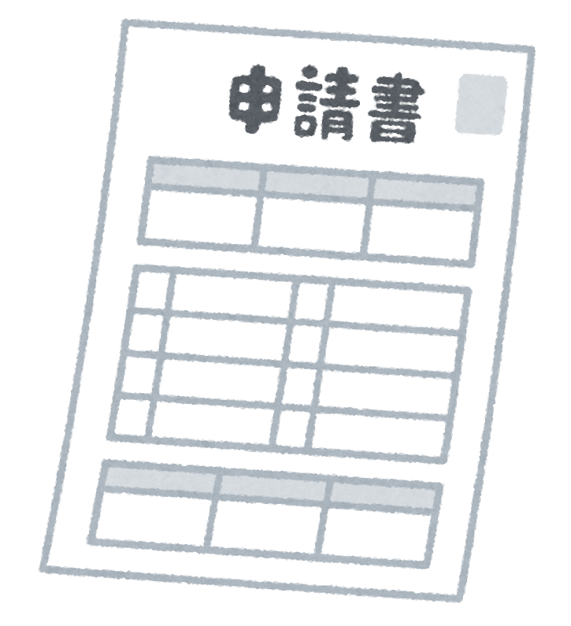
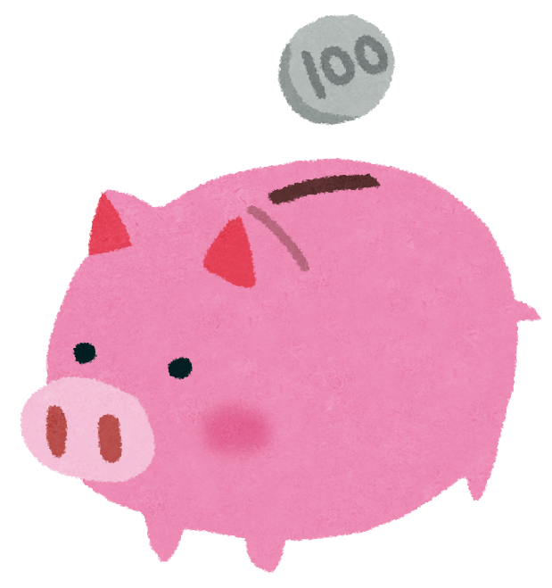

こんな情報をお届けしています
実際の投稿で扱っているテーマの一部です

手当・給付金の解説
知らないと申請できない公的な制度を、もらい忘れの多い順にわかりやすく整理してお届けします。
固定費・節約のワザ
一度見直せば効果がずっと続く、無理のない家計の整え方を紹介します。

申請のタイミング・注意点
「知ってたのに間に合わなかった」を防ぐための、期限や手続きのコツをまとめます。

申請すればもらえる公的な制度や手当を、30代主夫が調べてやさしくまとめています。
LINEでもらえる情報を受け取る登録・利用は無料です
実際の投稿で扱っているテーマの一部です

知らないと申請できない公的な制度を、もらい忘れの多い順にわかりやすく整理してお届けします。
一度見直せば効果がずっと続く、無理のない家計の整え方を紹介します。
「知ってたのに間に合わなかった」を防ぐための、期限や手続きのコツをまとめます。
「知らないだけで損してる」人を、一人でも減らしたくてこの発信を始めました。難しい制度も、実際に自分で調べて納得したものだけを、かみくだいてお届けしています。